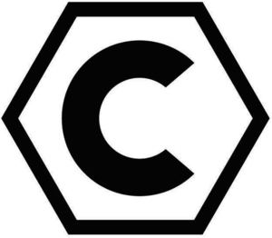

Trade Mark Journal No.2025/018 2 May 2025
WO0000001837334 (18,21,25,26,28,35)
Office of origin: European Union Intellectual Property Office (EUIPO)
Date of International Registration:16 October 2024
Date of designation in the UK:
16 October 2024

International priority date claimed: 13 September 2024
(European Union Intellectual Property Office (EUIPO))
(019079235)
- Class 18
- Leather and imitations of leather; animal skins, hides; luggage and carrying bags; bags; bags for sports; suitcases; rucksacks.
- Class 21
- Household or kitchen utensils and containers; drinking bottles; hampers, for household use in relation to the following goods: drinking bottles, all the aforesaid goods included in this class; coolers [non-electric containers].
- Class 25
- Clothing, footwear, headgear; socks; non-slip socks; sports socks; sportswear; sports underwear; camisoles; scrimmage vests; neck warmers; sweatbands; swimshoes.
- Class 26
- Decorative articles for the hair; hair bands; brassards.
- Class 28
- Games, toys and playthings; video game apparatus; gymnastic and sporting articles; sporting and physical exercise equipment; balls; accessories for balls; ball inflators; bags adapted for bowling balls; nets for ball games; ball holders; ball sacks; safety whistles; accessories for whistles, notably, whistle lanyards, wrist straps; goals; goal posts; goal nets; rebounder nets; hurdles; hurdling accessories; shin guards for athletes; shin guards [sports articles]; ball launchers; dummies for training purposes; training ropes; gloves for games; gloves made specifically for use in playing sports; sports gloves.
- Class 35
- Class 35 for a specification of: Advertising; retails and wholesale services connected with the sale of leather and imitation leather, animal skins, hide, luggage and carrying bags, bags, athletic bags, suitcases, rucksacks, household or kitchen utensils and containers, drinking flasks, carrying baskets for drinking bottles, non-electric cool boxes, clothing, footwear, headgear, socks, non-slip slipper socks, sports socks, sportswear, sports underwear, camisoles, training bibs, brassards, neck warmers, sweat bands, bath sandals, hair ornaments, hair bands, games, toys and playthings, video game apparatus, gymnastic and sporting articles, sporting and physical exercise equipment, balls, accessories for balls, ball inflators, bags for balls, round bale nets, ball storage, ball sacks, safety whistles, accessories for whistles, especially whistle lanyards, wrist straps, gates, goal posts, goal nets, padded walls for behind nets, hurdles, hurdle accessories, shin guards for athletes, shin guards for athletic use, ball shooting machines, dummies for training purposes, battling ropes, gloves for games, gloves adapted for sports, gloves for sports
eleven teamsports GmbH
Representative: HARMSEN UTESCHER, Neuer Wall 80, 20354 Hamburg, GERMANY